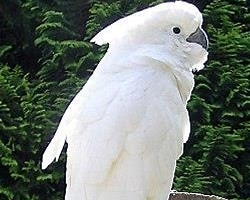
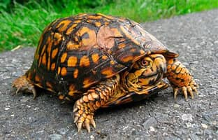
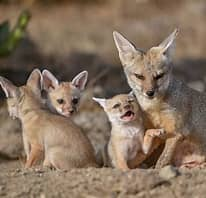

Mestizo
Personalidades increíblemente variadas y únicas, heredando una mezcla de rasgos de sus ancestros, lo que puede resultar en compañeros cariñosos, juguetones, inteligentes, tímidos o enérgicos

es un perro mediano, inteligente, enérgico y leal, con un fuerte instinto de pastoreo, pelaje doble y variado, y necesita mucha actividad física y mental para evitar comportamientos

Es un gato muy jugueton,travieso y explorador es un gato con diferentes colores pero muy lindo

Cacatúa Blanca
La cacatúa blanca es un ave de plumaje blanco y cresta expresiva, muy inteligente y sociable; se caracteriza por ser cariñosa, curiosa y ruidosa, necesita mucha interacción y estimulación, aprende a imitar sonidos y puede mostrar comportamientos problemáticos si se siente sola o aburrida.
La cacatúa blanca es un ave de plumaje blanco y cresta expresiva, muy inteligente y sociable; se caracteriza por ser cariñosa, curiosa y ruidosa, necesita mucha interacción y estimulación, aprende a imitar sonidos y puede mostrar comportamientos problemáticos si se siente sola o aburrida.

Tortuga Terrestre
La tortuga terrestre es un reptil de caparazón duro y patas fuertes, tranquila y longeva; tiene un comportamiento calmado y solitario, es principalmente herbívora, activa durante el día y requiere un ambiente estable, ya que el estrés o cambios bruscos pueden afectar su salud.

Zorro Del Desierto
El zorro del desierto es un mamífero pequeño de pelaje claro y orejas grandes, adaptado al calor extremo; es ágil, curioso y mayormente nocturno, vive en madrigueras, es muy activo y cauteloso, y utiliza sus grandes orejas para regular la temperatura y detectar presas.
El zorro del desierto es un mamífero pequeño de pelaje claro y orejas grandes, adaptado al calor extremo; es ágil, curioso y mayormente nocturno, vive en madrigueras, es muy activo y cauteloso, y utiliza sus grandes orejas para regular la temperatura y detectar presas.